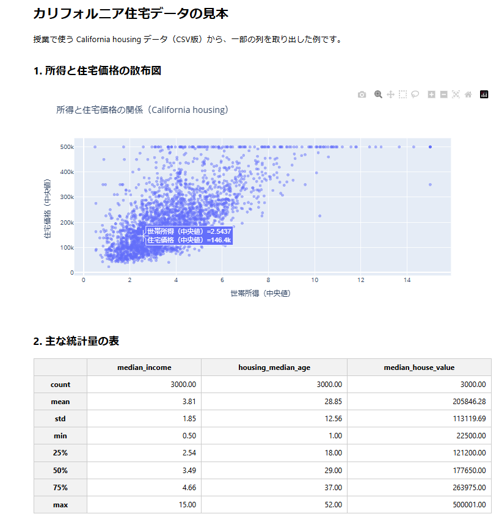
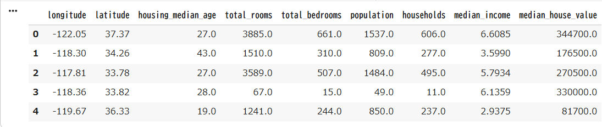
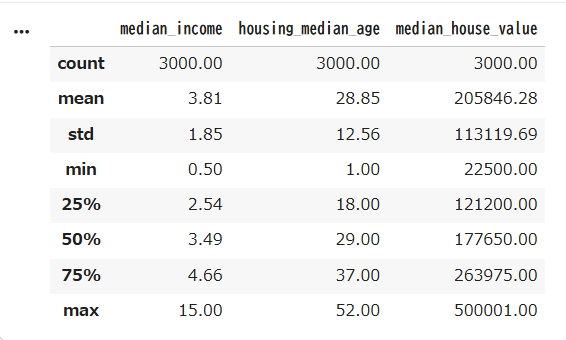
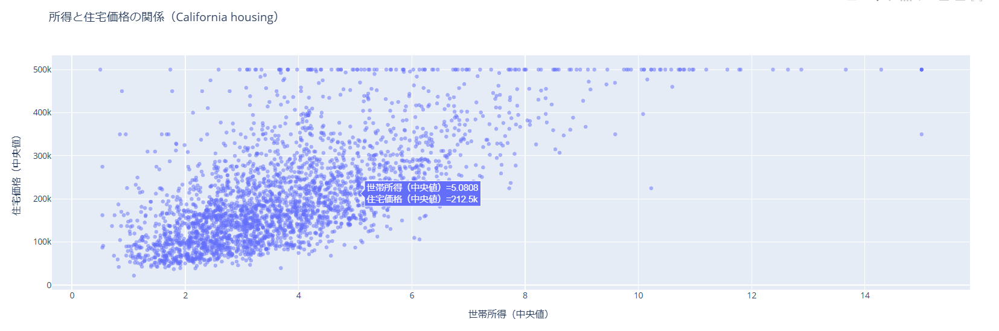
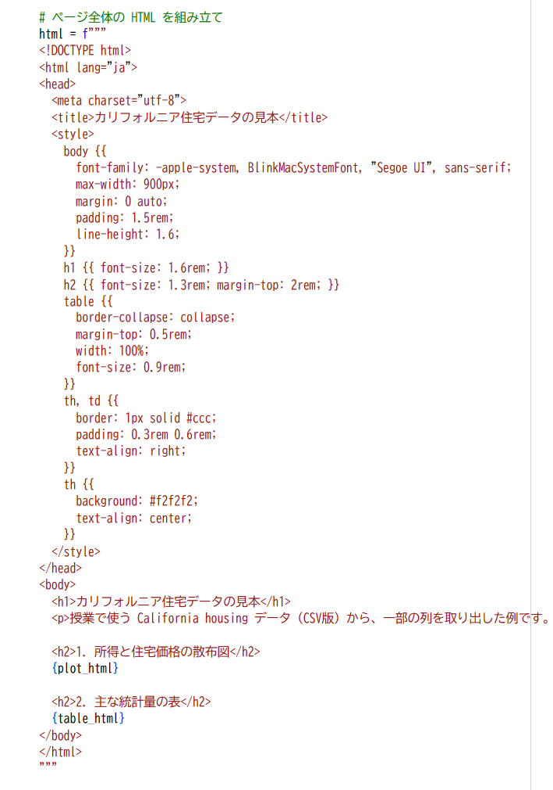
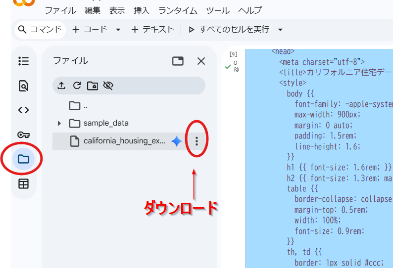
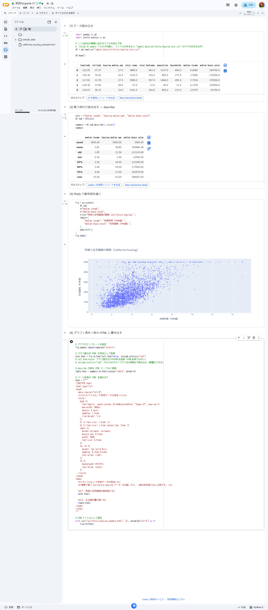

【Plotly】外部ライブラリ
講義進度: 第12回
Plotly は Python で インタラクティブなグラフを描くためのライブラリです。 Matplotlib と違い、グラフの上にマウスを乗せると値が表示されたり、特定の範囲を拡大できたりします。
また、作成したグラフを HTML ファイルとして書き出し、ブラウザで“動くグラフ”として配布できるのが特徴です。
この回では、前回までに学んだ Matplotlib の内容をふまえつつ、 Plotly を使って「動かせる可視化」を体験します。
california_housing_example.html

外部ライブラリ(Plotly,Pandas の導入)
import pandas as pd
import plotly.express as px
df = pd.read_csv("sample_data/california_housing_test.csv")
df.head()

Pandas で必要な列(Column)を取り出す
cols = ["median_income", "housing_median_age", "median_house_value"]
df_sub = df[cols]
summary = df_sub.describe().round(2)
summary

Plotly で散布図を描く
fig = px.scatter(
df_sub,
x="median_income",
y="median_house_value",
title="所得と住宅価格の関係（California housing）",
labels={
"median_income": "世帯所得（中央値）",
"median_house_value": "住宅価格（中央値）",
},
opacity=0.5,
)
fig.show()

表とグラフを HTML に書き出す
# グラフのテンプレートを指定
fig.update_layout(template="plotly")
# グラフ部分を HTML 文字列として取得
plot_html = fig.to_html(full_html=False, include_plotlyjs="cdn")
# full_html=False: グラフ部分だけのHTMLを取得（HTML全体ではない）
# include_plotlyjs="cdn": PlotlyのJSライブラリをCDN経由で読み込む（軽量化できる)
# describe の表を HTML テーブルに変換
table_html = summary.to_html(classes="table", border=0)
# ページ全体の HTML を組み立て

# HTMLファイルとして保存
with open("california_housing_example.html", "w", encoding="utf-8") as f:
f.write(html)california_housing_example.html が一時ファイルとして作成されたところ

california_housing_example.html 作成までのGoogle Colabの記述例

実習16 外部ライブラリ(Plotly)
ノートブックの続きに実習をし、完成したノートブックとcalifornia_housing_example.html を提出しましょうましょう。
- テキストセルに実習16 外部ライブラリ(Plotly)
- 各コードセルの前にもテキストセルを挿入し、役割が明確になるよう工夫しましょう。